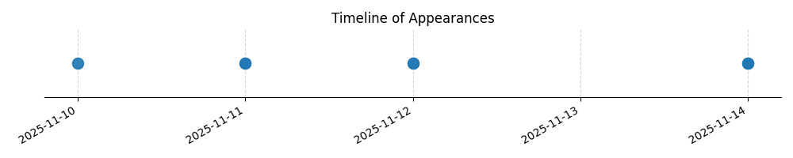

Kategorie: Letecké předpisy
Otázka se týká minimálních vizuálních podmínek a vzdáleností od oblaků ve specifické třídě vzdušného prostoru (třída G) a nad určitou výškou. Toto jsou základní informace spadající pod letectké předpisy, konkrétně pravidla letu podle přístrojů (IFR) a viditelnosti (VFR) a vzdušné prostory.

| Datum výskytu |
|---|
| 2025-11-14 |
| 2025-11-12 |
| 2025-11-11 |
| 2025-11-10 |